Appendix A: Conditions
Conditions alter a creature's capabilities in a variety of ways and can
arise as a result of a spell, a class feature, a monster’s attack, or
other effect. Most conditions, such as blinded, are impairments, but a
few, such as invisible, can be advantageous. A condition lasts either
until it is countered (the prone condition is countered by standing up,
for example) or for a duration specified by the effect that imposed the
condition.
If multiple effects impose the same condition on a creature, each
instance of the condition has its own duration, but the condition’s
effects don't get worse. A creature either has a condition or doesn’t.
The following definitions specify what happens to a creature while it is
subjected to a condition.
Blinded
- A blinded creature can’t see and automatically fails any ability check that requires sight.
- Attack rolls against the creature have advantage, and the creature’s attack rolls have disadvantage.
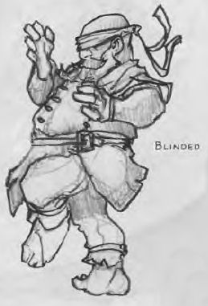
Charmed
- A charmed creature can't attack the charmer or target the charmer with harmful abilities or magical effects.
- The charmer has advantage on any ability check to interact socially with the creature.

Deafened
- A deafened creature can’t hear and automatically fails any ability check that requires hearing.
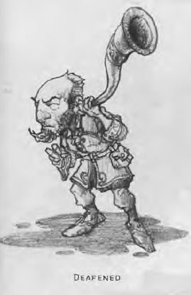
Frightened
- A frightened creature has disadvantage on ability checks and attack
rolls while the source of its fear is within line of sight.
- The creature can’t willingly move closer to the source of its
fear.
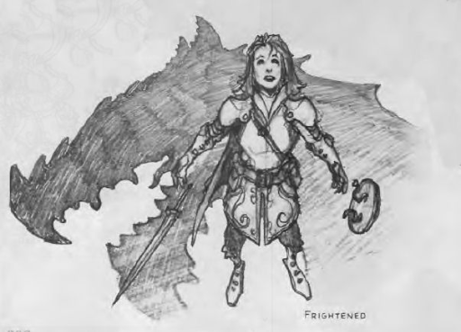
Grappled
- A grappled creature’s speed becomes 0, and it can't benefit from any
bonus to its speed.
- The condition ends if the grappler is incapacitated (see the
condition).
- The condition also ends if an effect removes the grappled creature
from the reach of the grappler or grappling effect, such as when a
creature is hurled away by the thunderwave spell.
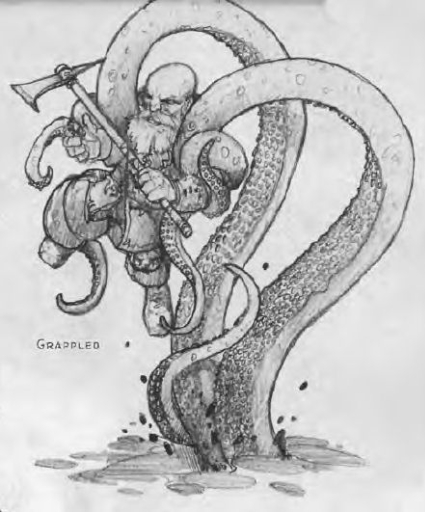
Incapacitated
- An incapacitated creature can’t take actions or reactions.
Invisible
- An invisible creature is impossible to see without the aid of magic or
a special sense. For the purpose of hiding, the creature is heavily
obscured. The creature’s location can be detected by any noise it makes
or any tracks it leaves.
- Attack rolls against the creature have disadvantage, and the
creature’s attack rolls have advantage.
Paralyzed
- A paralyzed creature is incapacitated (see the condition) and can’t
move or speak.
- The creature automatically fails Strength and Dexterity saving throws.
- Attack rolls against the creature have advantage.
- Any attack that hits the creature is a critical hit if the attacker is
within 5 feet of the creature.
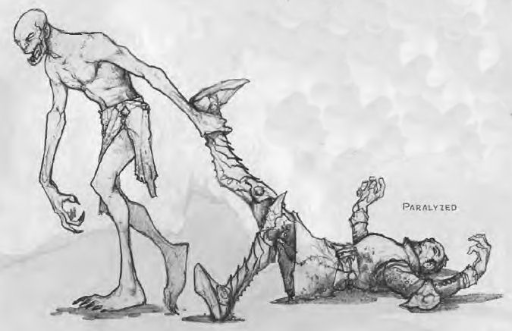
Petrified
- A petrified creature is transformed, along with any non-magical object
it is wearing or carrying, into a solid inanimate substance (usually
stone). Its weight increases by a factor of ten, and it ceases aging.
- The creature is incapacitated (see the condition), can’t move or
speak, and is unaware of its surroundings.
- Attack rolls against the creature have advantage.
- The creature automatically fails Strength and Dexterity saving throws.
- The creature has resistance to all damage.
- The creature is immune to poison and disease, although a poison or
disease already in its system is suspended, not neutralized.
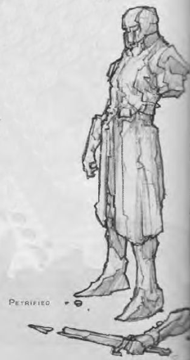
Poisoned
- A poisoned creature has disadvantage on attack rolls and ability checks.
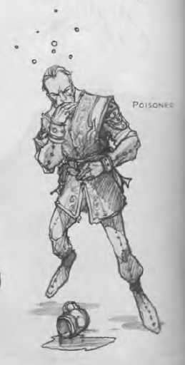
Prone
- A prone creature’s only movement option is to crawl, unless it stands
up and thereby ends the condition.
- The creature has disadvantage on attack rolls.
- An attack roll against the creature has advantage if the attacker is
within 5 feet of the creature. Otherwise, the attack roll has
disadvantage.
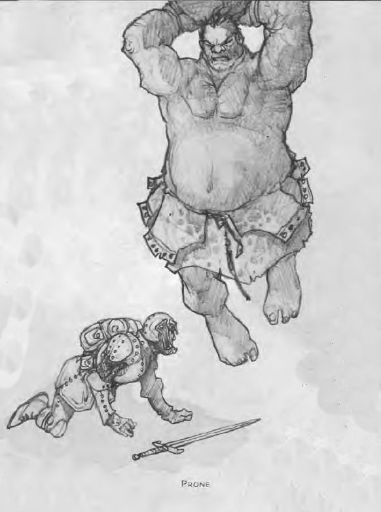
Restrained
- A restrained creature’s speed becomes 0, and it can’t benefit from any
bonus to its speed.
- Attack rolls against the creature have advantage, and the creature’s
attack rolls have disadvantage.
- The creature has disadvantage on Dexterity saving throws.
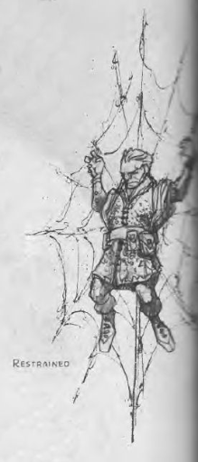
Stunned
- A stunned creature is incapacitated (see the condition), can’t move,
and can speak only falteringly.
- The creature automatically fails Strength and Dexterity saving throws.
- Attack rolls against the creature have advantage.
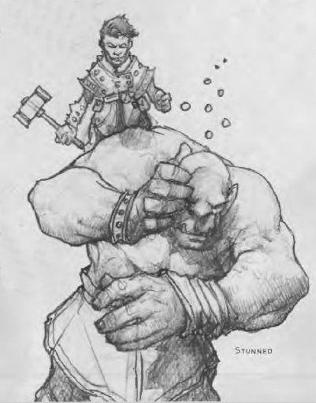
Unconscious
- An unconscious creature is incapacitated (see the condition), can’t
move or speak, and is unaware of its surroundings
- The creature drops whatever it’s holding and falls prone.
- The creature automatically fails Strength and Dexterity saving throws.
- Attack rolls against the creature have advantage.
- Any attack that hits the creature is a critical hit if the attacker is
within 5 feet of the creature.
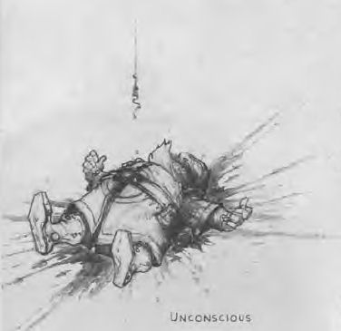